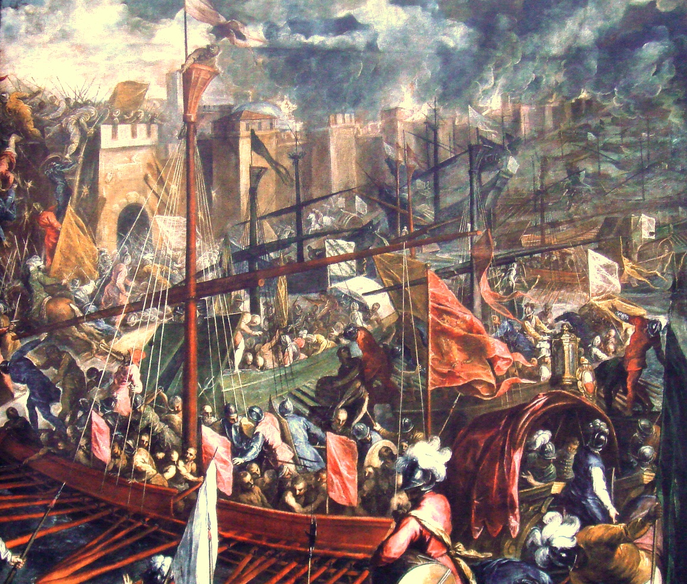
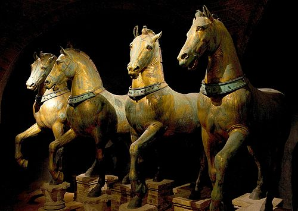
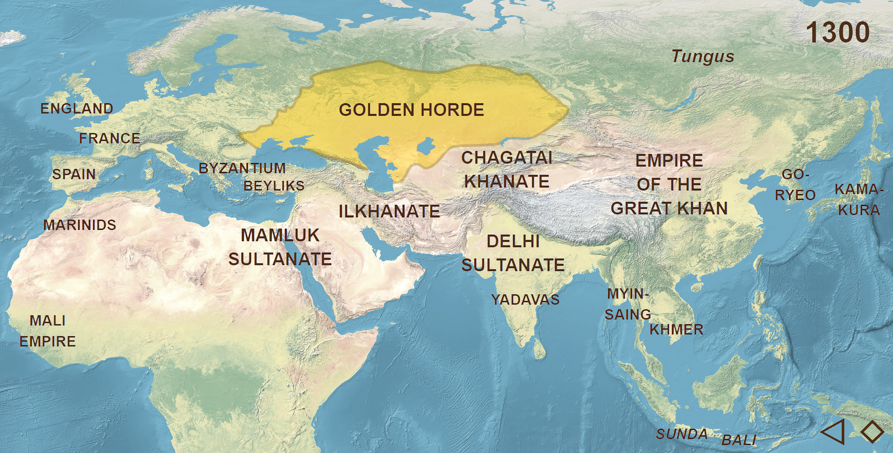
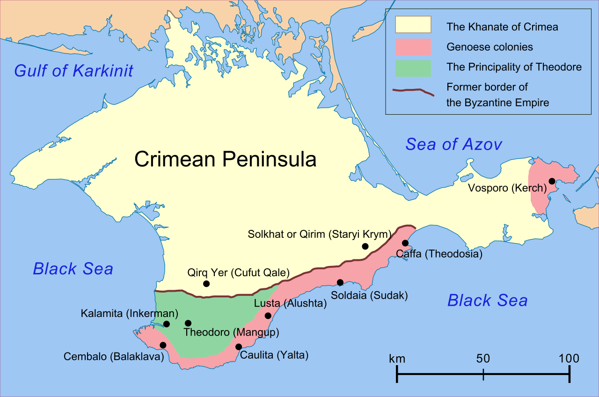
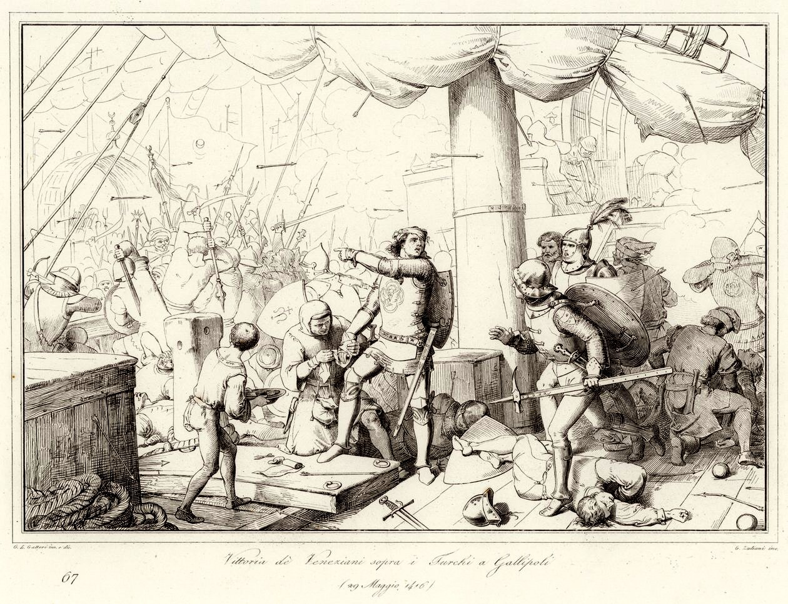
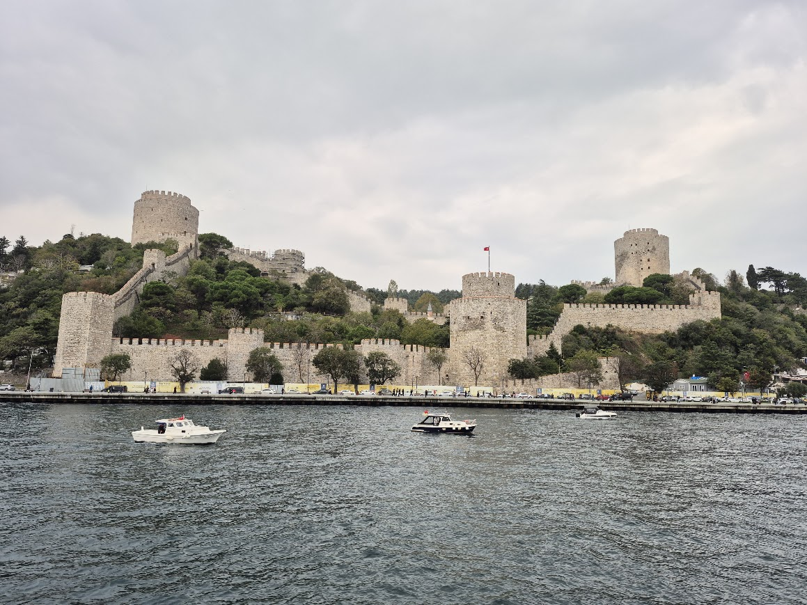
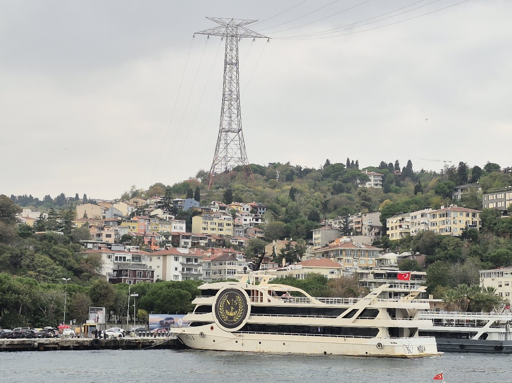
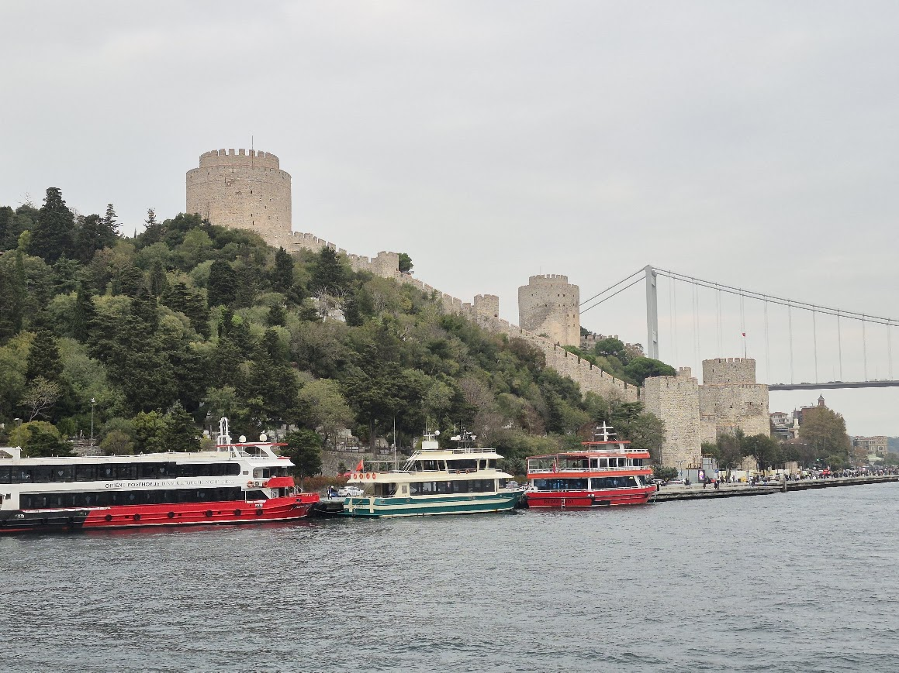
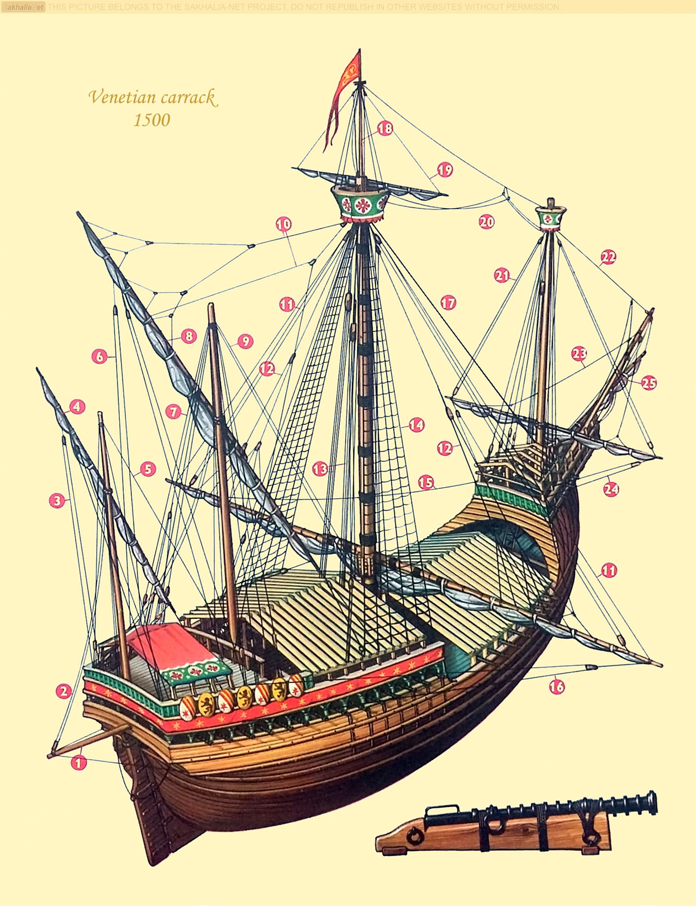

이스탄불 여행 (4) - 두 요새
게시: 2025-12-04T06:30:32+09:00
오스만 투르크는 1453년 콘스탄티노플을 함락시키기 직전에 먼저 보스포러스 해협을 완전히 장악했습니다. 그럴 수 밖에 없는 것이, 소아시아의 아나톨리아에 근거지를 둔 오스만 투르크가 유럽 대륙의 콘스탄티노플을 포위 공격하려면 많은 병력과 물자를 해협 너머로 자유롭게 운송할 수 있어야 했기 때문입니다. 뿐만 아니라, 외부에서 콘스탄티노플에 병력 또는 보급품을 지원해주는 세력을 봉쇄할 필요도 있었습니다. 특히 제노바와 베네치아가 문제였습니다. 이탈리아의 도시국가에 불과한 제노바와 베네치아가 흑해 입구의 콘스탄티노플까지 손을 뻗치는 것이 의외라고 생각하실 수도 있지만, 당대의 이탈리아 도시국가들은 적어도 지중해에서는 제해권을 가진 막강 선진국이었습니다. 제4차 십자군이 엉뚱하게도 1204년 콘스탄티노플을 함락시키고 약탈한 사건에서도, 십자군을 꼬드긴 베네치아는 매우 큰 역할을 했습니다. 콘스탄티노플을 함락시키고 약탈한 은화 90만 마르크(mark) 중에서, 50~60만 마르크는 십자군 기사들이 개별적으로 착복했지만, 정식으로 노획된 30만 마르크는 베네치아가 2, 십자군이 1의 비율로 나누었을 정도였습니다.

(유명한 제4차 십자군의 1204년 콘스탄티노플 약탈 사건입니다. 여기서 이야기가 새면 끝이 없으므로 이만 총총.)

(베네치아의 보물이라고 할 수 있는 Cavalli di San Marco, 즉 산 마르코의 4마상입니다. 이건 원래 BC 4세기 경에 그리스에서 만들어진 것으로서 콘스탄티노플 대경마장(Hippodrome)에 놓여있던 것인데, 1204년 콘스탄티노플이 함락되었을 때 베네치아인들이 전리품으로 가져와 베네치아의 산 마르코 바실리카 전면을 장식했습니다. 그러나 역사는 돌고 돈다고, 1797년 베네치아를 정복한 나폴레옹이 이걸 뜯어다 파리로 가져와 카루젤 개선문(Arc de Triomphe du Carrousel, 유명한 그 개선문이 아니고 조금 더 작은 개선문) 위에 올려놓았습니다. 이 4마상은 결국 1815년 워털루 전투 이후 다시 뜯어다 산 마르코 바실리카 앞에 가져다 놓았습니다. 지금은 그 자리에 모조품이 있고 진품은 바실리카 내부에 보존되어 있습니다.) 게다가 에게해와 흑해 연안에는 베네치아와 제노바의 식민도시들이 잔뜩 있었습니다. 특히 제노바의 흑해 내 식민도시들이 문제였습니다. 제네바는 13세기 후반에 킵차크 한국(영어로는 Golden Horde, 자신들의 말로는 Ulus Jochi)으로부터 크름 반도의 카파(Caffa, 현재의 Feodosia)를 사들여 식민도시를 건설한 이후, 크름 반도 및 아나톨리아 북해안 등 흑해 곳곳에 자신들의 거점 식민도시를 건설했습니다.

(우리나라 역사책에서는 킵차크 한국이라고 되어 있습니다만, 영어권에서는 Golden Horde라고 부릅니다. Ulus Jochi라는 이름에서 짐작하실 수 있듯이, 징기스칸의 아들 주치에게 할당된 영토인데, 주치는 사실 일찍 죽었고 그 아들인 바투가 세운 나라라고 보시면 됩니다.)

(크름 반도의 제노바 영토입니다. 킵차크 한국의 무시무시한 몽골족, 실은 몽골화된 투크르인들은 왜 제노바에게 크름 반도의 금싸라기 같은 해안 지방을 돈을 받고 팔았을까요? 제노바가 그들에게도 꽤 짭짤한 거래 상대였기 때문이었습니다. 제노바는 크름 반도에서 우크라이나의 곡물, 슬라브 노예, 명반((明礬, alum, 염료 재료로 쓰이던 광물)과 같은 상품을 사다 지중해로 가져가 북아프리카와 레바논 등의 레반트 지역, 남유럽에 비싼 값에 팔아 막대한 수입을 올렸습니다.) 그렇게 이탈리아 무역선들이 흑해와 지중해 사이에서 활발한 무역 활동을 했으므로, 당연히 그들에게는 보스포러스 해협이 안정적으로 유지되는 것이 유리했습니다. 제노바와 베네치아는 비잔틴 제국과 오스만 투르크 양측 모두와 외교 관계를 가지고 있었고 표면적으로는 중립을 지켰으나, 아무래도 같은 기독교 계열이고 또 역사적으로 안정적인 관계를 가진 비잔틴 제국이 유지되기를 원했습니다. 오스만 투르크도 그걸 잘 알고 있었습니다. 따라서 오스만 투르크는 제노바와 베네치아의 해군력 개입 가능성을 먼저 차단하기로 합니다. 아직 신흥 국가로서 해군력이 미약했던 오스만 투르크로서는 할 수 있는 일이 뻔했습니다. 특히나 바로 수십 년 전인 1416년 갈리폴리(Galipoli) 해전에서 불과 10척의 갤리선을 가진 베네치아 함대에게 32척의 갤리선으로 덤볐다가 5천이 넘는 사상자와 포로를 내고 참패한 기억이 생생했으므로, 감히 해전으로 그들을 제압할 수는 없었습니다. 결국 오스만 투르크는 콘스탄티노플을 본격적으로 포위하기에 앞서, 보스포러스 해협을 봉쇄하기 위해 해협의 가장 좁은 지점의 양쪽 해안에 요새를 짓기로 합니다.

(1416년의 갈리폴리 해전을 그린 그림입니다. 양측 모두 동일한 구조의 갤리선을 사용했고, 양측 모두 소수의 대포를 장착했으며, 양측 모두 쇠뇌와 활, 칼과 창 등을 주무기로 사용했으니 어느 한 쪽이 기술적 우위를 가졌다고는 할 수 없는 상황이었습니다. 게다가 다다넬즈 해협 안에서 싸웠으니 사실상 오스만 해군의 홈그라운드였습니다. 그러나 결과는 일방적으로서, 오스만 투르크가 5천이 넘는 사상자와 포로를 내고 대부분의 배가 격침되거나 나포된 것에 비해, 베네치아 해군은 12명의 전사자와 340명 정도의 부상자를 냈습니다. 이건 수병들이 얼마나 오랜 기간 바다에서 단련되었느냐 여부가 결정지은 승부였습니다.) 그 가장 좁은 지점의 아나톨리아 쪽 해변에는 아나돌루히사르(Anadoluhisarı, 아나돌루 요새, 여기서 아나돌루라는 것은 아나톨리아의 투르크 이름)라는 요새가 이미 1394년에 건설되어 있었습니다. 그리고 그 건너편인 유럽 쪽에는 과거 로마 제국의 요새터가 있던 언덕이 있었습니다. 오스만 투르크는 거기에 1452년 4월부터 요새를 지었고, 처음에는 보아즈케센(Boğazkesen, 목을 자르는 자, 해협을 끊는 자)이라고 불렀다가 나중에는 로마인의 요새라는 뜻으로 루멜리히사르(Rumelihisarı, 루멜리 요새)라고 불리게 되었습니다.

(이것이 제가 유람선 위에서 촬영한 루멜리 요새입니다.)

(이것은 아시아쪽의 아나돌루 요새입니다.)
 
(가장 좁은 해협이다보니 저렇게 다리도 놓여 있고, 또 바다를 가로지르는 송전선도 놓여 있습니다. 저 송전선 이야기는 또 다음에...) 이렇게 건설된 루멜리 요새와 아나돌루 요새에는 즉각 위력을 발휘했습니다. 이 지점의 해협은 폭이 불과 660m였기 때문에, 이 두 요새에 배치된 당시 기술 수준의 조악한 대포로도 해협 전체를 완벽하게 장악할 수 있었기 때문이었습니다. 오스만 투르크는 아직 콘스탄티노플을 점령하기 전부터도, 이 해협을 지나가는 모든 선박에게 통행세를 걷기 시작했습니다. 모든 선박들이 오스만 투르크에게 고분고분하게 돈을 낸 것은 아니었습니다. 통행세 부과를 시작한 지 얼마 안 되어, 베네치아 상선 한 척이 정지 신호를 무시하고 쾌속으로 빠져나가려 했습니다. 양쪽 요새에서는 즉각 발포했는데, 운이 좋은 건지 나쁜 건지 단 한 방에 상선이 격침되었고, 건져낸 베네치아인들은 선장을 제외하고는 모두 목을 베었습니다. 선장은 산 채로 말뚝에 박아 그 썩어가는 시체를 내걸어 지나가는 선박들에게 경고용 표지로 사용했다고 합니다. 그 다음 해인 1453년, 결국 콘스탄티노플은 육지와 바다에서 동시 공격을 받아 함락되어 이스탄불이 되었고 비잔틴 제국은 끝장이 났습니다.

(그렇게 단 한 방에 수장된 베네치아 선박이 어떤 형태인지는 알 수 없습니다. 당시 베네치아 해군의 선박들은 대개 노를 젓는 갤리선 형태가 많았지만 이런 캐럭(carrack) 선도 가지고 있었습니다. 상선들은 속도가 느리더라도 적은 비용으로 많은 짐을 실어야 했으므로 갤리선을 흑해 지역과의 무역에 사용할 수는 없었고, 저런 작은 캐럭선들이 많았을 것입니다.)
이제 오스만 투르크가 이스탄불과 보스포러스 해협을 손에 넣었으니, 흑해와 지중해 사이의 모든 교역은 오스만 투르크에게 통행세를 내야 했고, 그만큼 오스만 투르크의 국력은 더욱 강해졌습니다. 그리고 페르시아 갈리아족 훈족 바이킹 아바르족 십자군 등등 온갖 족속들이 탐냈던 비잔티움=콘스탄티노플=이스탄불과 보스포러스 해협은 그 누구도 감히 넘보지 못했습니다. 이제 동지중해 최강의 제국인 오스만 투르크가 그 새주인이 되었기 때문입니다. 하지만 세상에 영원한 것은 없고, 오스트리아 빈을 두 번이나 포위했던 강대국 오스만 투르크도 점점 국력이 기울기 시작했습니다. 그리고 흑해와 지중해 사이의 교역은 어느 때보다 더 중요해졌습니다. 과연 그런 상황에서 보스포러스의 막대한 이권은 어떻게 되었을까요?